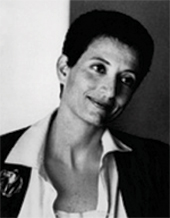

پذيرش > تریبون > گفت و گو > درپيشبرد مبارزه بايد از همه امکانات سود جست، تنزه طلبی در اين ميدان معنايی (...)
 هلن سيکسوس: هلن سيکسوس:

 درپيشبرد مبارزه بايد از همه امکانات سود جست، تنزه طلبی در اين ميدان معنايی ندارد درپيشبرد مبارزه بايد از همه امکانات سود جست، تنزه طلبی در اين ميدان معنايی ندارد
27 اسفند 1385 - گزيد ه ای از سخنان هلن سيکسوس در گفت و گو با شهلا شفيق - نسخه قابل چاپ
هلن سیکسوس در سال 1937 در شهر اوران الجزایر به دنیا آمد. مادرش آلمانی و پدرش الجزایری بود. دوران کودکی اش را در الجزایر گذراند و در سال 1955 برای ادامه تحصیل به پاریس رفت. در سال1968 با چاپ جستا ری در باره جيمز جويس به موفقيت قابل توجهی دست يافت. پس از جنبش ماه مه 1968 که نقش فعالی در آن داشت، از بنیانگذاران دانشگاه پاریس هشت بود. فیلسوفان نامداری چون ژیل دولوز و میشل فوکو در این دانشگاه تدریس میکردند. هلن سيکسوس علاوه بر تدريس مرکز مطالعات زنان را در اين دانشگاه ايجاد کرد. او در رمان ها ، نمايشنامه نويس و جستار ها يش به تأمل درباره زنانگی، دوگونگی جنسی و بدن به مثابه مکانی برای بیان ناخودآگاه پرداخت. در سال 1969 رمان "درون" به قلم او برنده جایزه معتبر مدیسیس شد. سیکسوس از چهرههای شاخص فرانسه است که تا به امروز بيش از پنجاه کتاب شامل رمان ، نمايشنامه و جستار از او به چاپ رسيده است. ژاک دريدا فيلسوف برجسته فرانسوی که هلن با او قرابت انديشگی دارد سيکسوس را بزرگ ترين نويسنده زنده فرانسوی زبان می دانست .
گزيد ه ای از سخنان هلن سيکسوس را در گفت و گو با شهلا شفيق می خوانيم :
پيرامون جنبش يک ميليون امضا
طبيعی است که از چنين جنبشی حمايت کنم. فکر می کنم همبستگی حداقل کاری است که می توانم انجام دهم و البته اين به معنای يک وضع گيری همراه با تبختر برای درس دادن به ديگران نيست . می بايد شرايط کشور ، گذشته آن و نير وهای سياسی و اجتماعی آن را در نظر گرفت. در کشوری مثل ايران شاهد ظرفيت های بزرگ فرهنگی همراه با شرابط متناقص سرکوب و پيشرفت هستيم. برای مثال در گنجينه فرهنگ ايران حضور زنان شاعر بزرگی مثل فروغ فرخزاد اهميت بسيار دارد . به گمان من می بايد بر همه منابعی که در نوسازی و تحول به کار می آيند تکيه کرد. محدود شدن در حصار يک فرهنگ و عدم امکان جابجايی و سفر مهلک است. معتقدم تبادل و گردش اطلاعات در عرصه بين المللی بسيار مهم است و بايد به انتقال هر چه بيشتر اطلاعات ياری رساند. نقش وسائل ارتباط جمعی، راديو و تلويزيون و همين طور سينما اساسی است. ايران کشوری ست که دارای همه ی اين امکانات است و مطمئنم در آن نير و هايی وجود دارند که قادرند حرکت کنند ، تغيير ايجاد کنند و آنطور که دريدا می گفت ساختار شکنی کنند، اين شانس بزرگی است که ايران کنوانسيون های بين الملی را امضا کرده است. و در اين ميان رجوع به وکلا و حقوق دانان اهميت دارد. اين هم مهم است که ايران، بر خلاف بسياری از کشور های اسلامی، مستعمره نبوده است. چرا که اين کشور ها در آن واحد هم از شرايط خود در رنجند و هم از ميراث استعمار . اما در رابطه با اسلام، به نظرم اسلام های متفاوت وجود دارد و برداشت های متنوع و البته می بايد با اعتدال انديشان و مقاومان اتحاد داشت. در رابطه با جنبش زنان در ايران و حركتشان به سوى روشنايى و برابرى حقوق با مردان، تنها كارى كه از ما ساخته است، اعلام حمايت و همبستگى با آنان است. متأسفانه سياستمداران ما از اين جنبشها غافل اند و تنها به منافع خود مىانديشند.
در باره مبارزات زنان در جهان امروز
زنان از آغاز همواره درگير در نبردی نابرابر بوده اند. بايد از خواست برابری در همه ی زمينه ها حمايت کرد. همان طور که مبارزه لائيک وجود دارد، زنانی هم برای رسيدن به جايگاه برابر با مردان در درون نهاد مذهب تلاش می کنند. اين موضوع مورد علاقه ی شخصی من نيست ولی معتقدم که چنين مبارزه ای هم بايد در نظر گرفته شود. به نظر من هيج زمينه ای را نبايد به انحصار مردان واگذشت. امروز در بعضی ارتش ها زنان حضور دارند. اين کاری نيست که پسند خاطر من باشد اما به خود می گويم زن ها بايد حق دسترسی به همه ی شغل ها را داشته باشند.
در پيش برد مبارزه بايد از همه ی امکانات سود جست زيرا تنزه طلبی در اين ميدان معنايی ندارد. بايد در عين سرسختی و آشتی ناپذيری راههای سازش را يافت، از همه ی ترفند ها سود جست و همه نيروها را به کار گرفت، از ميان شکاف ها لغزيد و به پيش رفت. به گمانم می بايد انواع حرکت ها را به پيش برد. هر جنبشی می تواند نقش و جايگاه خود را داشته باشد. می بايد اشکال گوناگون مبارزاتی خلق کرد.
نباید پنداشت که گویا یک انقلاب جهانی خواهد توانست، یک شبه مناسبات دیرین هزاران ساله را دگرگون کرده و به برابری زن و مرد بينجامید.
در كشورهاى اسكانديناوى، تغييرات قابل ملاحظهاى به سود زنان صورت گرفته است. چرا؟ نخست اين كه زنان در اين كشورها از سنت مبارزاتى ديرينهاى برخوردارند. و نيز اين كه اين كشورها كوچك اند و مبارزه در مقياس يك جمعيت 5 يا 6 میليون نفرى هم آسان تر است و هم اين كه زودتر به نتيجه می رسد. بعلاوه، ويژگى حضور ملكهها در رأس اين كشور ها عاملی مهم به سود مبارزات زنان است. دسترسى زنان به مقامات بالا و حتا نخست وزيرى در اين كشورها امرى عادى است. در واقع اين كشورها مدل برابرى زنان با مردان هستند.
در باره فرهنگ ، ادبيات و فمينيسم
با اين كه من همواره به عنوان يك نويسنده و يك شهروند به نفع مبارزات زنان و به سود مطالبات آنان موضع گرفته و مىگيرم، خود را به عنوان " نويسنده ی ادبيات فمينيستی" ارزيابی نمی کنم. فكر می كنم در اين مقام بايد انسان بود و به انسانيت انديشيد.
.من در جنبش فمينيستی مشارکت کرده ام و نيز هر کجا سركوب و خفقان وجود داشته باشد در جنبش بر عليه آن شركت می كنم . اما در آثار من همه جور شخصيت انسانی وجود دارد، و در ميان آنان زنان. ولی هيچ يک از اين آثار وقف زنان نيست. البته بايد بگويم که اگرچه فرهنگ من، يا بهتر بگويم فرهنگ هاى من، مرزهاى جنسى و زبانى را درمی نوردند، به نوعی و با قوت قابل ملاحظه ای در کنار زنان قرار می گيرند و از جمله طرف زنانى كه قربانى بد کنشی خود زنان هستند. اگر يك بررسى آمارى انجام گيرد، معلوم می شود كه پديده ضد زنى تا چه اندازه در ميان خود زنان وجود دارد، چرا كه در زنان هم ميزوژنی ﴿ زن ستيزی ﴾ کار کرد دارد، تصورات واهى را بايد كنار گذاشت، اگر غير از اين بود مدتها پيش مشكلات حل شده بود. به نظر من مهمترين مسئله اين است که زنان خود را با مردان بازشناسى می كنند و نه با زن ها. از همين رو پرداختن به پرسوناژ مادر بسيار اهميت دارد، نمی خواهم از اين حرف نظريه ای بسازم، اما مادرهايی که در كارهاى من، در نمايشنامهها و در رمانهايم حضور دارند شخصيتهای زيبايی هستند. در حاشيه بگويم که من به باز شناسی و کشف دنيا هايی که غالبا به سبب جذاب نبودن در نظر گرفته نمی شوند خيلی فکر می کنم، حال آنکه اين ها، و از آن جمله شخصيت های پير فوق العاد ه اند.
اگر آثار ادبی زنی مثل ويرجينيا ولف را در نظر بگيريم. در كارهاى او پرسوناژهاى زن، بسيار زيبا، سنگين و خيلى جالب حضور دارند . به نظر من اين امر دليل فمينيستی تلقی کردن آثار او نيست بلكه در اين زمينه، خيلى ساده، سخن از هنر است. در آثار او زنانى هستند كه با زنان ديگر همدردى و همبستگى دارند و نيز زنانى كه از زنان ديگر بدشان می آيد. اين را می پذيرم كه بی شمار ادبيات مردانه و زن ستيز وجود دارد، اما معتقدم كه ادبيات گرانقدر همواره از اين تقسيم بندیها فراتر می رود.
در ادبيات، به محض آن كه يك شخصيت زیبای زن خلق می شود، وقتى موجودی آفريده می شود كه عشق و محبت خوانندگان را به سوى خود جلب می كند، حرکتی به پيش رفته و چيزى براى هميشه به ثبت رسيده است. اين كار را مردها نيز كرده اند. هر جا كه يك نويسنده، زن يا مرد، پرسوناژى انسانى می آفريند، شخصيتی محو نشدنی به بشريت می افزايد و اين به نظر من بسيار اهميت دارد.
به نظر من نويسنده مسئول است ، پس مضمون کار بسيار مهم است، در عين حال بايد قلمرو تخيل را از قلمرو تئورى جدا كرد. اگر بخواهيد گفتارسياسى بسامانی عرضه كنيد، بهتر آن است به صورت تئورى تنظيم اش كنيد. اما برايم قابل تصور نيست كه نوشته ای تخيلى، داستان ،شعر و نمايشنامه فاقد آگاهی باشد و خالی از عنصر فكر و ظرفيت به پرسش كشيدن خود در زمينه مسئوليت اخلاقى و سياسى. اين کار مطلقا حياتی است.
به عنوان مثال، وقتى من نمايشى را به صحنه می برم، چگونه می توانم شخصيت زنى را به صورت هيولا نشان دهم، مگر اين كه بخواهم خطا بودن چنين تصويرى را نشان دهم. من در متن نوشتههايم، حتا در بافتار نوشتههاى تخيلى نيز از طرح پرسشهاى اخلاقى، فلسفى و سياسى باز نمی مانم. در كارهاى من، در متن خود نوشته، همواره شخصيتی ، كلام يا صدايى هست كه درباره خود متن پرسش طرح می كند: ”دارى چه می کنى، از چه حرف می زنى، به كجا می خواهى بروى؟“.
می خواهم بگويم كه چنين روشى، جزئى از ظرفيت و ژرفاى شاعرانه متن است. خود متن، شخصيتی ست درون متن كه متن را به پرسش می كشد. متن می تواند بگويد: ”ايست!“، به كجا می روى؟ فكر می کنى دورتر از اين هم می شود رفت ، بالا رفت و يا پائين آمد ؟ همواره گمانه زنى حضور دارد.
آيا چنين متنى هويت جنسى را درمی نوردد؟ كاملا! فراتر از اين، متن بی پايان است و از همين رو در نزديکی و قرابت با بيش از يک گونه و جنس است. هرگز متنی ننوشته ام که حيوانات در آن نباشند. به نظر من تنها دو گونگی وجود ندارد بلكه چندين و چند گونگی در کار است. صبح كه از خواب برمی خيزم، نمىدانم كي هستم، يکی هستم يا جمعيتی ؟ من مادر فرزندانم هستم، از جمله آنها گربه هايم. بعضى وقتها ميل دارم دخترى باشم يا نوزادى. شايد اسبى و يا مرد كهنسالى ... از هيچ چيز نمى خواهم خودم را محروم كنم! اگر به تو نگاه كنم و تو را زيبا بيابم ميل می کنم تو باشم! بله، اين حق را به خود می دهم و به همه که چنين كنند.
می خواهم اضافه کنم که آدمها از ظرفيتی بسيار بيشتر از آنچه گمان می رود برای آزادی درونی برخوردارند . من بار ها با افراد بی سوادی برخورد داشته ام که از ذهنيتی خلاق و باز برخوردار بودند و بر عکس تحصيل کرده هايی می شناسم ربوت صفت و ديو مسلک.
نيروهای درونی آدمها بسيار است و سرشار، اما جامعه می تواند آن ها را خرد کند و تقليل دهد. نقش مبارزه فرهنگی در اين است که به اين نير وها فرصت می دهد خود را در هنر بيان کنند.
ارسال به
بالاترین
،
توییتر
،
فریندفید
،
فیسبوک
در همين بخش :
 دهمین دورۀ مراسم تندیس صدیقه دولت آبادی ۱۳۹۲ دهمین دورۀ مراسم تندیس صدیقه دولت آبادی ۱۳۹۲
کارت پستالهایی به بهانهی هشت مارس و به یاد همهی مبارزین راه برابری
بیانیه بیش از 350 تن از مدافعان حقوق زنان به مناسبت روز جهانی زن؛ زنان هر روز فرودستتر میشوند
لباسی که برای تن ما دوخته اند! /اعظم بهرامی
چالشها و چشمانداز فعالیت مدنی زنان
ديگر بخش ها :
طرح یک میلیون امضا
|
مقالات
|
سایت نوشته ها
|
اخبار
|
گزارش كمپين
|
گفت و گو
|
علیه سکوت
|
كوچه به كوچه
|
نامه های شما
|
گزارش ویژه
|
گفتگو با اعضا
|
ویژه سالگرد کمپین
|
تصویر برابری
|
دل آرام علی
|
تریبون
|
مقالات
|
تاریخ شفاهی
|
خارج از چارچوب
|
کتابخانه
|
درباره کمپین
|
کمپین در شهرها
|
کمپین در بند
|
صدای تغییر
|
ویژه 22 خرداد
|
لایحه حمایت از خانواده
|
گالری
|
عشا مومنی
|
امیر یعقوبعلی
|
خدیجه مقدم
|
راحله عسگری زاده و نسیم خسروی
|
پروین اردلان،جلوه جواهری، مریم حسین خواه، ناهید کشاورز
|
زینب پیغمبرزاده
|
سعیده امین، سارا ایمانیان، محبوبه حسین زاده، ناهید کشاورز و همایون نامی
|
احترام شادفر
|
نسیم سرابندی زاده،فاطمه دهدشتی
|
وبلاگ مهمان
|
پرونده خرم آباد
|
دستگیری ها
|
مریم مالک
|
پرستو اللهیاری
|
مهرنوش اعتمادی
|
سمیه رشیدی
|
Other Languages
|
همراهان
|
«فراخوان کمپین ده روز با بهاره هدایت»
| English
|